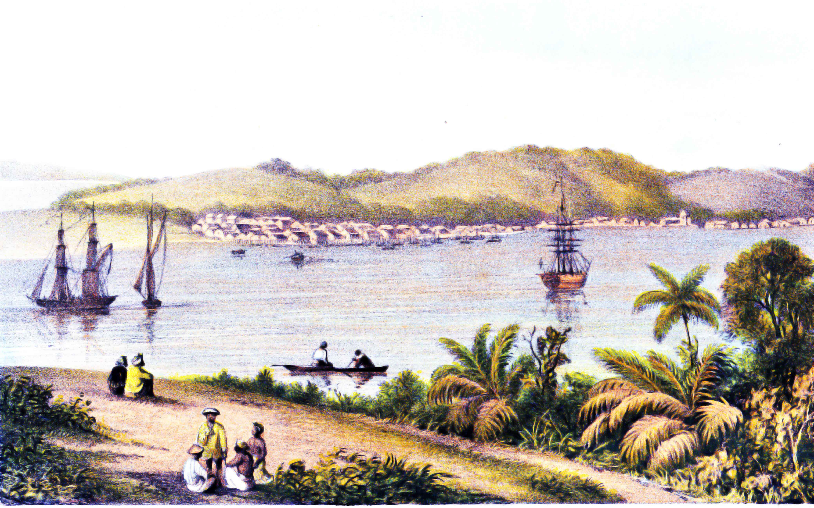
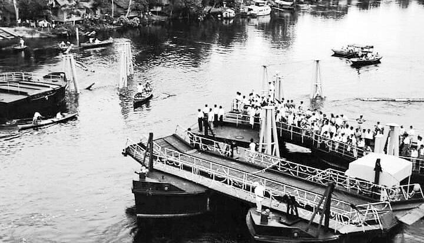
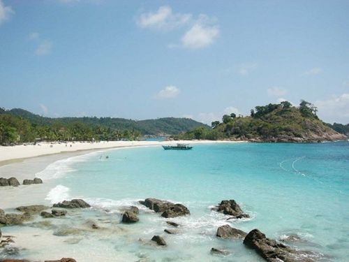
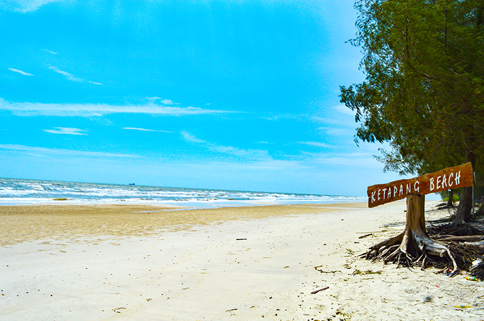
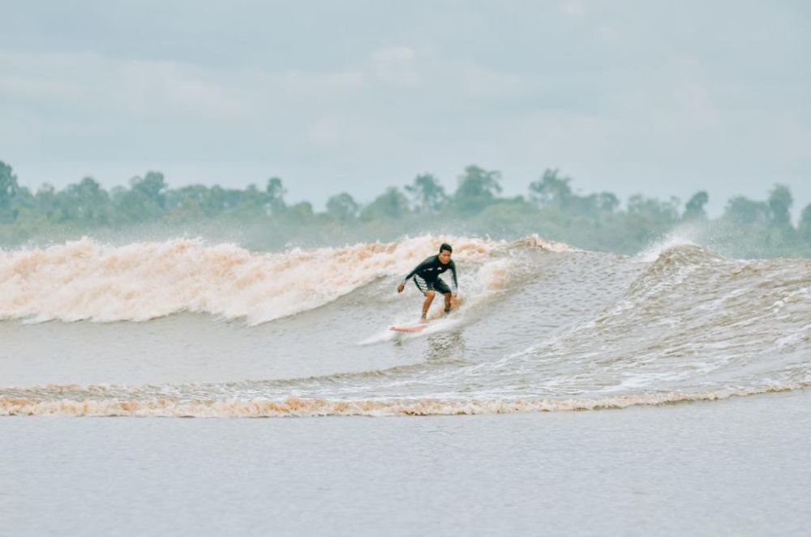

Sejarah
Masa Prasejarah

Riau diduga telah dihuni sejak masa antara 10.000-40.000 SM. Kesimpulan ini diambil setelah penemuan alat-alat dari
zaman Pleistosin di daerah aliran sungai Sungai Sengingi di Kabupaten Kuantan Singingi pada bulan Agustus 2009. Alat
batu yang ditemukan antara lain kapak penetak, perimbas, serut, serpih dan batu inti yang merupakan bahan dasar
pembuatan alat serut dan serpih.
Tim peneliti juga menemukan beberapa fosil kayu yang diprakirakan berusia lebih tua dari alat-alat batu itu. Diduga
manusia pengguna alat-alat yang ditemukan di Riau adalah pithecanthropus erectus seperti yang pernah ditemukan
di Sangiran, Jawa Tengah. Penemuan bukti ini membuktikan ada kehidupan lebih tua di Riau yang selama ini
selalu mengacu pada penemuan Candi Muara Takus di Kampar sebagai titik awalnya.
Masa prakolonial

Pada awal abad ke-16, Tome Pires, seorang penjelajah Portugal, mencatat dalam bukunya, Suma Oriental bahwa kota-kota
di pesisir timur Sumatra antara suatu daerah yang disebutnya Arcat (sekitar Aru dan Rokan) hingga Jambi adalah
pelabuhan dagang yang dikuasai oleh raja-raja dari Minangkabau. Di wilayah tersebut, para pedagang Minangkabau
mendirikan kampung-kampung perdagangan di sepanjang Sungai Siak, Kampar, Rokan, dan Indragiri.
Satu dari sekian banyak kampung yang terkenal
adalah Senapelan yang kemudian berkembang menjadi Pekanbaru, yang kini menjadi ibu kota provinsi.
Sejarah Riau pada masa pra-kolonial didominasi beberapa kerajaan otonom yang menguasai berbagai wilayah di Riau. Kerajaan yang
terawal, Kerajaan Keritang, diduga telah muncul pada abad keenam, dengan wilayah kekuasaan diperkirakan terletak di Keritang,
Indragiri Hilir. Kerajaan ini pernah menjadi wilayah taklukan Majapahit, namun seiring masukkan ajaran Islam, kerajaan tersebut
dikuasai pula oleh Kesultanan Melaka. Selain kerajaan ini, terdapat pula Kerajaan Kemuning, Kerajaan Batin Enam Suku, dan
Kerajaan Indragiri, semuanya diduga berpusat di Indragiri Hilir. hingga kedatangan kolonial, terdapat beberapa kerajaan
dan kesultanan di Riau. Kerajaan Tambusai, Rambah, Kepenuhan, Rokan IV Koto dan Kunto Darussalam menguasai kawasan hulu sungai
Rokan dan anak sungainya yang sekarang menjadi kabupaten Rokan Hulu. Kerajaan Kampar Kiri dan Singingi menguasai kawasan sehilir
sungai Kampar Kiri dan Singingi yang sekarang menjadi sebagian wilayah kabupaten Kampar dan sebagian wilayah kabupaten Kuantan
Singingi.
Kerajaan Kuantan menguasai kawasan sehilir sungai Kuantan yang sekarang menjadi sebagian wilayah kabupaten Kuantan
Singingi. Kesultanan Siak Sri Inderapura menguasai
kawasan yang sekarang menjadi kabupaten Rokan Hilir, Bengkalis, kota Dumai, Siak, Kepulauan Meranti, sebagian kota Pekanbaru,
kawasan sehilir sungai Tapung Kiri dan kanan serta Taratak Buluh dan sekitarnya yang sekarang masuk kabupaten Kampar.
Kesultanan Pelalawan menguasai kawasan yang sekarang menjadi kabupaten Pelalawan. Dan kesultanan Indragiri menguasai
kawasan yang sekarang menjadi kabupaten Indragiri Hulu dan Indragiri Hilir, sedangkan sebagian kawasan pesisir Indragiri
dulunya menjadi wilayah kesultanan Lingga–Riau yang berpusat di Daik Lingga. Kawasan sehilir sungai Kampar Kanan dipimpin
oleh Datuk-datuk adat mereka sendiri.
Bahasa
Riau merupakan provinsi dengan latar belakang penduduk yang majemuk, sehingga terdapat banyak bahasa yang
dituturkan sehari-hari. Menurut sensus 2010, 40,05% penduduk Riau berusia 5 tahun ke atas berbicara menggunakan
bahasa Indonesia, sedangkan 58,68% menggunakan bahasa daerah. 1,27% sisanya menggunakan bahasa asing, tidak
terdata/tidak didata (tidak diketahui), tidak ditanyakan, atau tidak menjawab.
Bahasa-bahasa daerah yang dominan dituturkan di Riau, antara lain Melayu, Jawa, Minangkabau, Batak, dan Banjar.
Bahasa Melayu, yang dikenal sebagai bahasa Melayu Riau beserta dialeknya, merupakan bahasa yang dipertuturkan
secara luas oleh etnis Melayu yang merupakan penduduk asli Riau khususnya di daerah pesisir, seperti Rokan Hilir,
Bengkalis, Dumai, Kepulauan Meranti, Indragiri Hilir,
hingga ke daerah daratan, seperti Pelalawan, Pekanbaru, Siak, Indragiri Hulu, Kampar, Kuantan Singingi, dan Rokan Hulu.
Bahasa Minangkabau dipergunakan secara luas/dominan menjadi bahasa perniagaan di perkotaan (Pekanbaru)
dan di sebagian wilayah bagian barat Riau yang berbatasan dengan Sumatera Barat. Selain menjadi bahasa yang
digunakan masyarakat etnis Minangkabau dan digunakan di pasar-pasar/tempat perniagaan, dialek/bahasa Minangkabau
juga bahkan dominan dan menjadi bahasa sehari-hari,
bahasa pengantar/komunikasi (lingua franca), dan bahasa pergaulan masyarakat kota Pekanbaru.
Di Pekanbaru sendiri mayoritas etnis Minang, etnis Minang merupakan etnis terbesar di Pekanbaru.
Hal ini dikarenakan banyak orang Minang yang merantau lalu berniaga, bekerja, dan sekolah/kuliah di
Riau hingga menetap dan menjadi warga Riau (khususnya Pekanbaru yang merupakan ibu kota provinsi Riau),
ini juga menyebabkan logat khas Minang dengan ciri khas penambahan partikel "do" diakhir kalimat dan beberapa
kosakata/partikel seperti "mah", "wak", dan lainnya banyak dipakai masyarakat
kota Pekanbaru oleh non-Minang seperti pendatang lainnya ataupun masyarakat asli Melayu Riau itu sendiri.
Bahasa Melayu lokal di daerah sekitar Pekanbaru yang dituturkan oleh masyarakat
Melayu Riau memang terdengar banyak kemiripan dan ada beberapa persamaan dengan dialek bahasa
Minangkabau terutama dari logatnya. Bahasa Melayu lokal disana juga memiliki ciri kata diakhiri "o"
seperti Minang juga dengan beberapa kosakata yang sama dan banyak kemiripan terutama dari logat bahasa.
Selain dituturkan di Pekanbaru, bahasa ini juga dituturkan oleh masyarakat asli Minang yang berada di
sebagian wilayah yang berbatasan dengan Sumatera Barat di Kampar, Rokan Hulu, dan Kuantan Singingi.
Ketiga daerah tersebut mempunyai banyak kemiripan dan persamaan dari adat-istiadat, budaya/kebudayaan,
dan bahasa dengan daerah tetangganya di Sumatera Barat,
serta mempunyai ciri dialek tersendiri yang agak berbeda dengan masyarakat Melayu Riau lainnya.
Pariwisata
Pulau Jemur

Terletak lebih kurang 45 mil dari ibu kota Kabupaten Rokan Hilir, Bagansiapiapi, dan 45 mil
dari negara tetangga yakni Malaysia, sedangkan provinsi Sumatera Utara adalah provinsi yang
terdekat dari Pulau Jemur. Pulau Jemur sebenarnya merupakan gugusan pulau-pulau yang terdiri
dari beberapa buah pulau antara lain, Pulau Tekong Emas, Pulau Tekong Simbang, Pulau Labuhan
Bilik, serta pulau-pulau kecil lainnya. Pulau-pulau yang terdapat di Pulau Jemur ini berbentuk
lingkaran sehingga bagian tengahnya merupakan laut yang tenang. Pada musim angin barat laut tiba,
gelombang laut di Selat Malaka sangat besar, dan biasanya nelayan-nelayan setempat berlindung di
bagian tengah Pulau Jemur, karena air laut pada kawasan tersebut tenang. Setelah gelombang laut
mengecil atau badai berkurang barulah para nelayan keluar untuk memulai aktivitas menangkap ikan
kembali. Pulau Jemur memiliki pemandangan dan panorama alam yang indah, selain itu Pulau Jemur
ini amat kaya dengan hasil lautnya, serta pulau ini dimanfaatkan oleh penyu untuk menyimpan
telurnya di bawah lapisan pasir-pasir pantai. Selain itu pada pulau Jemur juga terdapat beberapa
potensi wisata lain di antaranya adalah Gua Jepang, mercusuar,
sisa-sisa pertahanan Jepang, batu Panglima Layar, taman laut dan pantai berpasir kuning emas.
Pantai Ketapang & Pantai Makruh Rupat Tengah

Berlokasi di Kecamatan Rupat Selatan, Kawasan Pantai berhadapan langsung dengan Selat Malaka,terdiri
atas Pantai Ketapang, Pantai Lohong dan Pantai Makruh, tepatnya di Desa Sungai Cingam dan Desa Makruh.
Panjang Garis Pantai +/- 4 KM
dari Selat Morong sampai ke Pantai Makruh. Sarana transportasi darat dan laut dari Kota Dumai dapat ditempuh 1 Jam.
Objek Wisata Bono

Terletak di Desa Teluk Meranti, sepanjang Sungai Kampar dan Sungai Rokan. Bono adalah fenomena
alam yang datang sebelum pasang. Air laut mengalir masuk dan bertemu dengan air sungai Kampar
sehingga terjadi gelombang dengan kecepatan yang cukup tinggi, dan menghasilkan suara seperti
uara guntur dan suara angin kencang. Pada musim pasang tinggi, gelombang sungai Kampar bisa mencapai 4-6 meter,
membentang dari tepi ke tepi menutupi keseluruhan badan sungai. Peristiwa ini terjadi setiap hari, siang maupun malam hari.
Hal yang menarik turis ke objek wisata ini adalah kegiatan berenang, memancing, naik sampan, dan kegiatan lainnya.
Candi Muara Takus

Candi Muara Takusterletak di Desa Muara Takus, Kecamatan XIII Koto Kampar, Kabupaten Kampar. Jaraknya kurang
lebih 135 km dari Kota Pekanbaru. Jarak antara kompleks candi ini dengan pusat desa Muara Takus sekitar 2,5 km
dan tak jauh dari pinggir Sungai Kampar Kanan. Kompleks candi ini dikelilingi tembok berukuran 74 x 74 meter.
Di luar arealnya terdapat pula tembok tanah berukuran 1,5 x 1,5 kilometer yang mengelilingi kompleks ini sampai
ke pinggir Sungai Kampar Kanan. Di dalam kompleks ini terdapat pula bangunan Candi Tua, Candi Bungsu, Mahligai
Stupa, serta Palangka. Bahan bangunan candi terdiri dari batu pasir, batu sungai, dan batu bata.
Menurut sumber
tempatan, batu bata untuk bangunan ini dibuat di desa Pongkai,
sebuah desa yang terletak di sebelah hilir kompleks candi.Bekas galian tanah untuk batu bata itu sampai saat ini dianggap sebagai tempat yang sangat dihormati penduduk.
Untuk membawa batu bata ke tempat candi, dilakukan secara beranting dari tangan ke tangan. Cerita ini walaupun
belum pasti kebenarannya memberikan gambaran bahwa pembangunan candi ini dilakukan secara bergotong royong oleh
orang ramai. Selain Candi Tua, Candi Bungsu, Mahligai Stupa, dan Palangka, di dalam kompleks candi ini ditemukan
pula gundukan yang diperkirakan sebagai tempat pembakaran tulang manusia. Di luar kompleks ini terdapat pula
bangunan-bangunan yang terbuat dari batu bata, yang belum dapat dipastikan jenis bangunannya. Kompleks candi
Muara Takus, satu-satunya peninggalan sejarah yang berbentuk candi di Riau. Candi yang bersifat Buddhisme ini
merupakan bukti pernahnya agama Buddha berkembang di kawasan ini beberapa abad yang silam. Kendatipun demikian,
para pakar purbakala belum dapat menentukan secara pasti kapan candi ini didirikan.
Ada yang mengatakan abad kesebelas, ada yang mengatakan abad keempat, abad ketujuh, abad kesembilan dan sebagainya.